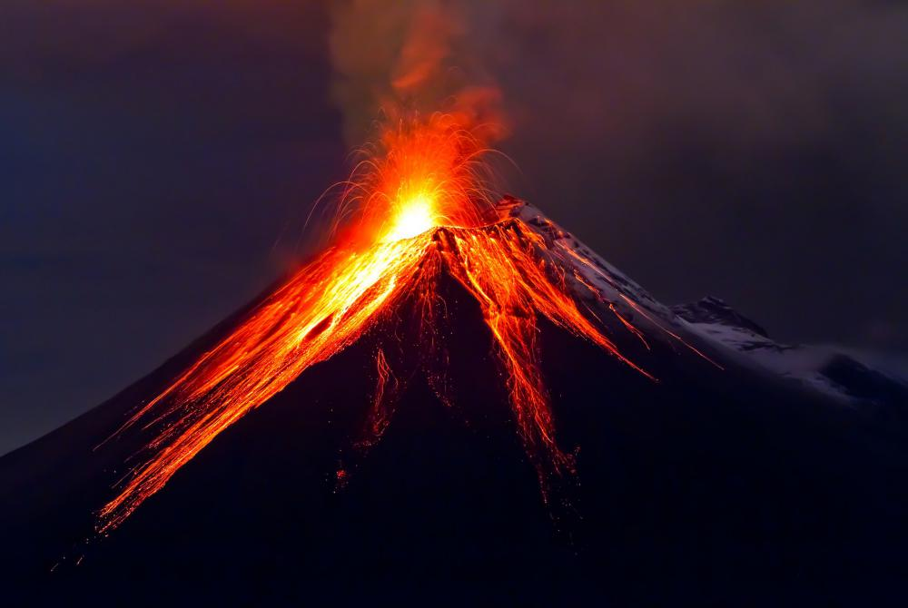

Vulkanen
Wat zijn vulkanen?
Een vulkaan is een opening in het oppervlak van een planeet waar gesmolten gesteente (magma), gas en brokstukken van vast gesteente (tefra) door naar buiten komen. Rond zulke openingen wordt vaak een berg gevormd en men
sprak vroeger dan ook wel van een vuurspuwende berg. De momenten waarop materiaal door een vulkaan wordt uitgestoten worden uitbarstingen of erupties genoemd.
Waar komen vulkanen voor?
Op Aarde worden vulkanen vooral aangetroffen in gebieden waar tektonische platen aan elkaar grenzen, dus de plaatsen waar ook aardbevingen voorkomen. Een uitzondering hierop vormen hotspots. Dit zijn gebieden waar
heet materiaal uit de mantel door de aardkorst heen naar boven komt.
Andere planeten
Ook op andere steenachtige planeten en manen binnen ons zonnestelsel komen vulkanen voor. Zo zijn op de planeten Venus en Mars en de manen Io (Jupiter) en Triton (Neptunus) vele vulkanen waargenomen. Van de laatste twee
wordt vermoed dat ze vloeibare stikstof of methaan uitstoten; het vulkanisme waarbij dit optreedt wordt cryovulkanisme genoemd.
Rond vulkanen
Vulkanische vlakten, en ook geisers, warmwaterbronnen en kokende modderbronnen zijn verschijnselen die in de buurt van vulkanen kunnen worden aangetroffen, maar omdat ze geen uitgesproken reliëf kennen zijn het geen vulkanen.
Ze ontstaan doordat de aardkorst in de buurt van vulkanen dunner is dan op andere plaatsen.
Samenstelling
Een veelgebruikte classificatie voor vulkanen is gebaseerd op de samenstelling van het gesteente dat gevormd wordt.
- Zure vulkanen: als het magma felsisch (of zuur) van samenstelling is (de concentratie silica is boven de 65%) is het magma stroperig. Daardoor kan deze massa de kratermond moeilijk verlaten of kan het de opening door plugvorming zelfs verstoppen. Dit laatste is er de oorzaak van dat de erupties bij dergelijke vulkanen vaak zeer explosief verlopen en gepaard gaan met gloedwolken. Eenmaal aan de oppervlakte stolt het magma, dat nu lava wordt genoemd, relatief snel. De Lassen Peak in het Lassen Volcanic National Park in Californië is een goed voorbeeld van een zure vulkaan. Ook het stollingsgesteente ontstaan uit de Mount Saint Helens in de staat Washington heeft een zure samenstelling.
- Basische vulkanen: als het magma mafisch (of basisch) van samenstelling is (bij lage silicaconcentraties) is het magma minder stroperig en zal de eruptie minder explosief verlopen omdat het magma de krateropening gemakkelijker kan verlaten. De lava kan door de lage viscositeit langere afstanden afleggen, en stroomt veel sneller dan zure lava. Vulkanen van dit type worden onder andere aangetroffen op IJsland en Hawaï.
Vorm
Bij een andere classificatiemethode wordt naar de vorm van de vulkaan gekeken.
- Schildvulkanen zijn gevormd door laag-viskeuze (dus mafische) lava die ver kan uitstromen, waardoor de vulkanen gekenmerkt worden door een brede basis en langzaam oplopende, flauwe hellingen. De grootste vulkanen op aarde zijn van dit type. De Mauna Loa op Hawaï met een diameter van 120 km is hiervan een duidelijk voorbeeld.
- Kegelvulkanen (of Sintelkegels) ontstaan als gruis, puin en veelal kleine rotsblokken die door de vulkanische opening worden uitgeworpen en zich daaromheen ophopen. Hierdoor ontstaat er een kegel met in het midden een krater. Een voorbeeld is de Hverfell bij Mývatn op IJsland.
- Stratovulkanen (of koepelvulkanen) zijn het tegenovergestelde van schildvulkanen. De lava die uit dit type vulkaan komt is veel viskeuzer (en dus zuurder van samenstelling) en taaier dan de lava geproduceerd door schildvulkanen. Daardoor kan de lava niet ver uitstromen. De lava hoopt zich als het ware op waardoor de vulkaan heel steile wanden vormt. De Fuji in Japan is een bekende stratovulkaan.
- Calderavulkanen zijn vulkanen die ontstaan in de gevulde kegel van een oudere vulkaan. Het magma gebruikt dikwijls nog de oude kraterpijp tot een bepaalde diepte waar dan via kleinere kanalen meerder nieuwe kleine vulkanen in de oude krater ontstaan.
- Het laatste type vulkanen vormen de supervulkanen (of spleetvulkanen). Dit zijn vulkanen die weinig reliëf hebben en vaak voorkomen als kloven of gaten in het landschap. Over een periode van een miljoen jaar barsten ze slechts 1 à 2 keer uit en stoten daarbij grote hoeveelheden as en stof uit (meer dan 2500 km³). Een voorbeeld is de Toba op Sumatra en de Yellowstone-caldera
Kracht
Een nog andere classificatie gaat uit van de explosieve kracht van de uitbarsting van de vulkaan, waarbij de naam van een bekende vulkaan dikwijls als classificatie voor de betreffende explosieve kracht geldt. De Amerikanen Chris
Newhall van de United States Geological Survey en Steve Self van de Universiteit van Hawaï hebben in 1982 de vulkanische-explosiviteitsindex (VEI) opgezet voor het geven van een relatieve meting van de explosiefheid van vulkanische
uitbarstingen. Deze index loopt van 0 tot 8; elke eenheid hoger betekent een 10 keer zwaardere explosieve kracht. Zo heeft de Mauna Loa een VEI van 1, de Etna een index 2, de Krakatau een index 6 en een supervulkaan als de Yellowstonecaldera
een VEI van 8.